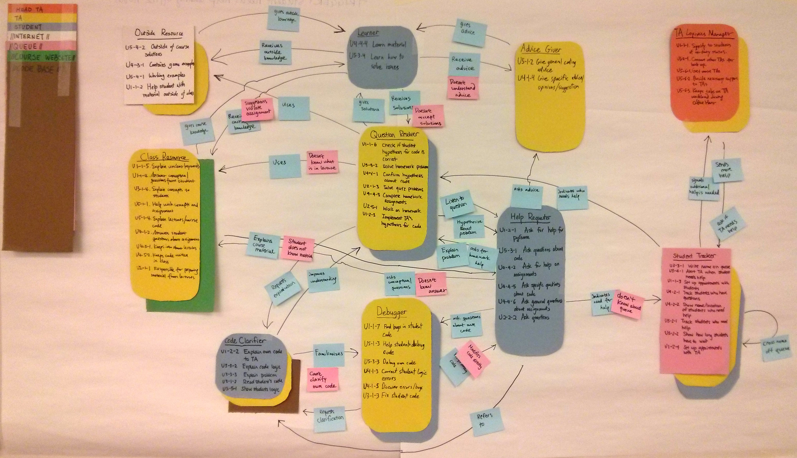

UX Design & Research
2013
Group Project with Anna Turner, Xiaoyue Wang, Billy Chantree, and Luna Ruan
Project Requirements
This was a 6-week project. As part of class assignments for User-Centered Research and Design, we were required to conduct contextual inquiry with Teacher Assitants (TAs) for a computer science class. The goal was to find out potential break-downs of the current TA system and to improve its efficiency.
Design Process
Week of 10/28
Each of the group member went to observe 1-hour long Office Hours (OH) for an introduction computer science class. As part of the contextual inquiry, we each shadowed one TA as he/she held an OH and helped students.
The purpose of the shadowing sessions was to understand, from first-hand experience, what the roles of TAs are and what their job entailes. Meanwhile, the sessions offered us valuable opportunities to ask the TAs the purpose of them doing a task.
After the observations of the OHs, all 5 of the team members had taken multiple pages of notes. To bring together the notes together, we sat down for interpretation sessions where one observer retold stories from the OHs and 3 other team members pulled out the key information and write them down as Sequence Model, Flow Model, and lists of key insights.

Week of 11/11
The next step of the project is to make affinity diagrams using the key insights from the interpretation sessions. The goal of the stage is to find break-downs in TA's work flow for further improvement. One difficulty we had was to choose which problem to focus on. Our next step, consolidating, helped us greatly in limiting problems to focus on solving.

Week of 11/18
With the affinity diagram and the sequence and flow models, we need to consolidate the pieces of evidence to find insights and problems worth addressing.
The green post-its were big steps the TAs take to help students while the blue post-its were observations supporting the big steps. The red post-its showed issues the TAs run into while helping the students.
From the consolidation, we first consolidated the sequence models and ended up with a smaller diagram with main observations and break-downs. It was much easier to understand the flow of TAs' work in comparison to the multiple sequence models we had previously.

Then, we consolidated the flow model. The final diagram had role cards with responsibilities for each person involved the OHs and arrows, signaling how the peoples involved interacted with each other.
Final Delivery
Week of 11/25
We finally came to the point where we need to choose the top 3 problems to come up with potential solutions for. Visioning is a great tool for this purpose. We pinpointed 3 problems: lack of feedback for the TAs, slightly disorganized OHs, and un-unified TA teaching style. Given the 3 problems, we brainstormed solutions for the problems.
To better illustrate how our solutions could effectively solve the problems we found, we visionsed our solutions using simple illustrations.